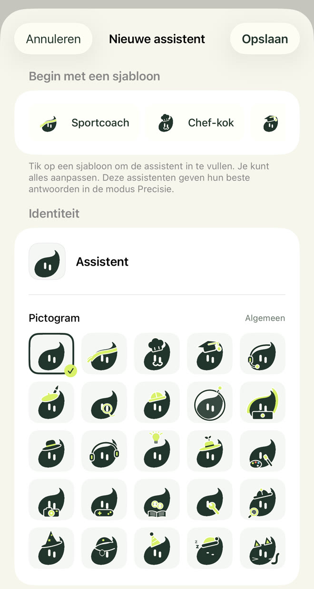
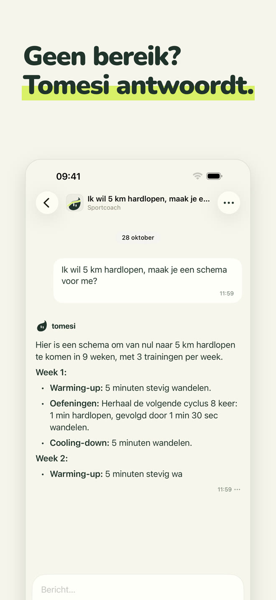
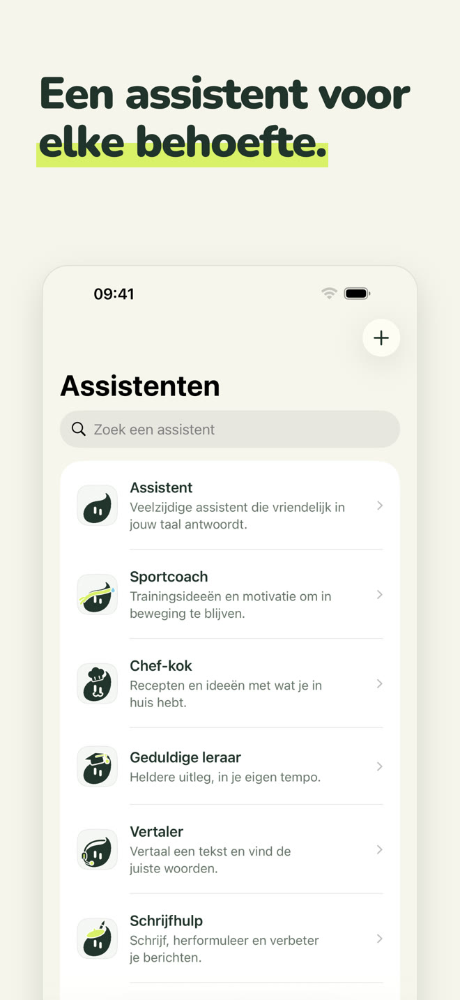
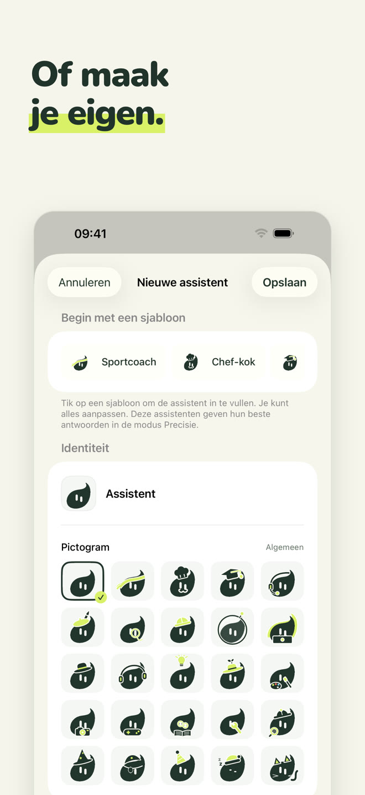
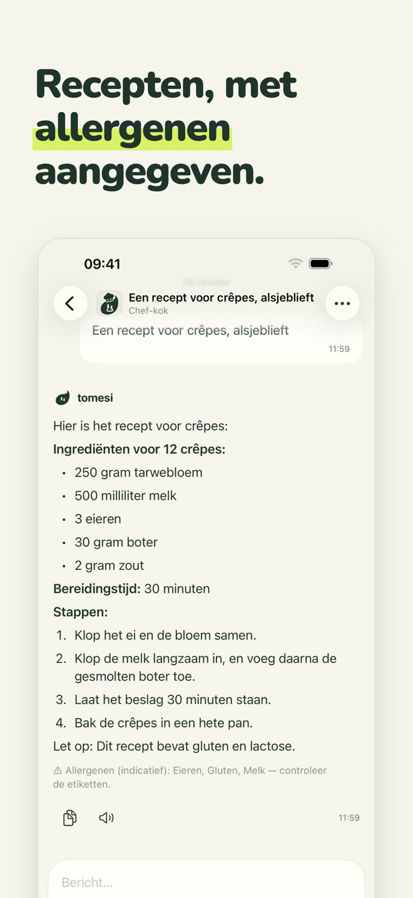
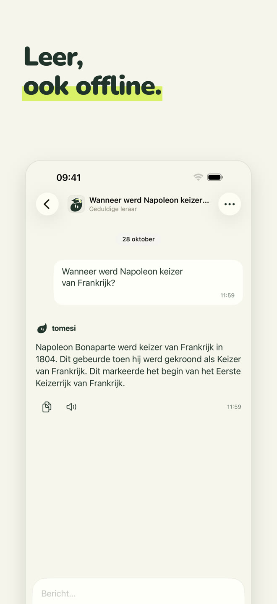
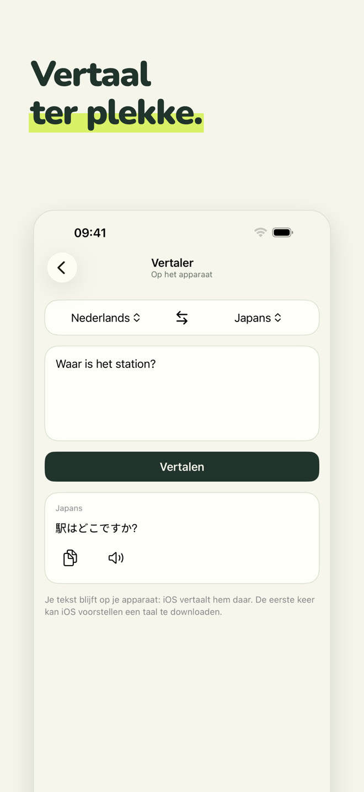
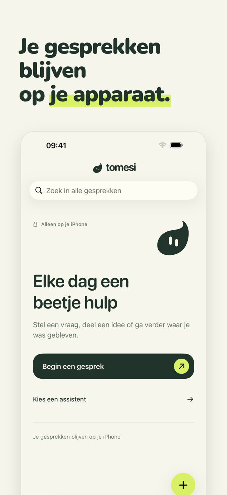

Een 100% lokale AI-assistent: hij draait op je iPhone, in het vliegtuig, in de bergen, in het buitenland. Wat je schrijft, verlaat nooit je telefoon.
Download in de App StoreEenmalige aankoop · geen account · geen abonnement
Elke assistent heeft zijn eigen rol en manier van antwoorden. Kies degene die je helpt, of praat gewoon met de allround assistent.
Allround: hij antwoordt vriendelijk in jouw taal.
Trainingen die passen bij je tijd en materiaal, schema's week na week.
Eenvoudige recepten met wat je in huis hebt, allergenen aangegeven.
Legt stap voor stap uit, in jouw tempo: wiskunde, geschiedenis, wetenschap, grammatica.
Vertaal tekst tussen 13 talen, ter plekke.
E-mails, berichten, brieven; en spelling verbeterd, fout voor fout.
Geef hem een naam, een persoonlijkheid en een van de 25 pictogrammen van Tomesi: een assistent naar jouw smaak, die ook de kennisbladen van de app gebruikt.

Een klein model kan niet alles weten. Tomesi heeft nagekeken kennisbladen bij zich en geeft ze aan de assistent bij het antwoorden.
Hoeveelheden, stappen en allergenen, door de app onder het antwoord getoond.
14 landen, plus bladen over wetenschap, aardrijkskunde en grammatica in 14 talen.
En 65 gidsen: schema's over meerdere weken, herstel, voeding, sporten.
Zoals elke AI kan Tomesi zich vergissen: controleer belangrijke informatie.







De AI is op je iPhone geïnstalleerd. Wat je schrijft, wordt nooit via internet verstuurd of ergens anders bewaard.
Geen registratie, geen e-mail, geen advertenties, geen gegevens verzameld.
Geen servers om te betalen, dus geen abonnement: de app is van jou.
De optionele modus Precisie downloadt een krachtiger model (ongeveer 3 GB) voor antwoorden die meer nuance vragen.
Ja. Zodra de app en de assistent geïnstalleerd zijn, heeft Tomesi geen internet meer nodig: de AI draait volledig op je iPhone. Probeer het met de vliegtuigmodus.
Nergens. Ze blijven op je telefoon. Tomesi heeft geen gespreksserver, geen gebruikersaccount en geen advertenties. Zie ons privacybeleid.
ChatGPT woont op servers: je hebt verbinding nodig en je gesprekken gaan erlangs. Tomesi woont op je iPhone: minder encyclopedisch dan een cloudreus, maar altijd beschikbaar, volledig privé en zonder abonnement.
Een iPhone met 8 GB geheugen (iPhone 15 Pro of nieuwer) met iOS 26 of nieuwer. Reken op ongeveer 3 GB vrije ruimte, plus 3 GB voor de optionele modus Precisie.
Ja, zoals elke AI. De recepten, jaartallen en kennisbladen in de app zijn gecontroleerd en worden aan de assistent gegeven, wat fouten sterk vermindert, maar controleer altijd belangrijke informatie.
Tomesi is vertaald in 13 talen (Nederlands, Engels, Frans, Duits, Spaans, Italiaans, Pools, Portugees, Japans, Koreaans, vereenvoudigd Chinees, Russisch…) en de assistent begrijpt en antwoordt in nog meer talen.
Ja. MonIA heet nu Tomesi. Heb je de app al gekocht, dan hoef je niets opnieuw te kopen: een update is genoeg, en je gesprekken blijven op je telefoon.